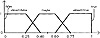
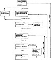

by Abraham Kandel
CRC Press, CRC Press LLC
ISBN: 084934297x Pub Date: 11/01/91
|
|
Fuzzy Expert Systems
by Abraham Kandel CRC Press, CRC Press LLC ISBN: 084934297x Pub Date: 11/01/91 |
| Previous | Table of Contents | Next |
In MILORD we have implemented the pairs (T1,S1), (T2,S2), and (T3,S3), following the experimental results obtained by Bonissone,3 which consisted of applying nine t-norms to three different term sets. Bonissone analyzed the sensitivity of each operator with respect to the granularity (number of elements) in the term sets and concluded that only the t-norms T1, T2, and T3 generated sufficiently different results for term sets that do not have more than nine elements. On the other hand, according to the results of Miller9 concerning the span of absolute judgment, it is unlikely that any expert or user would consistently qualify uncertainty using more than nine different terms.
MILORD allows the expert to define the term set of linguistic certainty values which constitutes the verbal scale that he and the users will use to express their degree of confidence in the rules and facts, respectively. Recent psychological studies1 have shown the feasibility of such verbal scales. “. . . A verbal scale of probability expressions is a compromise between people’s resistance to the use of numbers and the necessity to have a common numerical scale,” according to Beyth-Marom.1 “. . . People asked to give numerical estimations on a common-day situation err most of the time and in a nonconsistent way. Furthermore, they are unable to appreciate their judgment imprecision (errors are by far bigger than the maximum error accepted as possible by the subjects themselves). Nevertheless, judgments embodied in linguistic descriptors appear consistent in this same situation.”6
Each linguistic value is represented internally by a fuzzy interval (fuzzy number), i.e., the membership function of a fuzzy set on the real line, or, more precisely, on the truth space represented by the interval [0,1]. These membership functions can be interpreted as the meanings of the terms in the term set. The conjunction and disjunction operators applied to these functions will produce another membership function, as a result that will have to be matched to a term in the term set, in order to keep the term set closed. This can be done by a linguistic approximation process that will be described later (see Bonissone2 for an extensive study of the linguistic approximation process).
Figure 1 The trapezoidal function.

Figure 2 Five elements representation.
Although the expert can define its own term set together with its internal representation, MILORD provides the following default term set:
{False, almost-false, maybe, almost-true, true}
Each term Ti is represented by a membership function µi(x), for x in the interval [0,1].
For computational reasons, each membership function is represented by four parameters T1 = (ai,bi,ci,di), corresponding to the following trapezoidal function:
The five element default term set has the following representation:
corresponding to the following functions in Figure 2.
In order to be able to evaluate the t-norms T1,T2,T3, and the t-conorms S1,S2,S3 on the elements of the term set, we have applied the following formulas according to the arithmetic rules on fuzzy numbers.
Given two fuzzy intervals l = (a,b,c,d) and l′ = (a′,b′,c′,d′), we have the following:
A linguistic approximation process is performed in order to find a term (linguistic value) in the term set whose “meaning” (membership function) is the closest (according to a given metric) to the “meaning” (membership function) of the result of the conjunction or disjunction operation performed on any two linguistic values of the term set. This allows us to maintain, closed, the operations for any t-norm and t-conorm. The problem is, therefore, that of computing a distance between two trapezoidal membership functions. In order to do so, we have adopted a simple solution consisting of the computation of a weighted Euclidean distance of two features of the functions: the first moment and the area under the function. The next figure shows the results obtained with the selected t-norms T1, T2, and T3 on the default term set of Figure 2.
This section describes elicit-analyze-refine (EAR), a system and ancillary methodology for aiding knowledge engineers in the early phases of knowledge base design. That is to say, we focus on the top half of Figure 3 because we are convinced that much of the difficulty in knowledge acquisition lies in the fact that the expert cannot easily describe how he views a problem, because he may not distinguish between the facts or beliefs and the factors which influence his decision making. Much of the expertise lies in the way an experienced person views the problem, and this is a psychological issue that can be dealt in terms of the personal construct psychology. The psychology of Kelly7 views a human as a scientist classifying and theorizing about his world and basing his theory on the hypothesis that everybody has his own model of the world made up of personal constructs.

Figure 3 Knowledge acquisition stages.
| Previous | Table of Contents | Next |
){kind=link}
){kind=link}
){kind=link}
){kind=link}